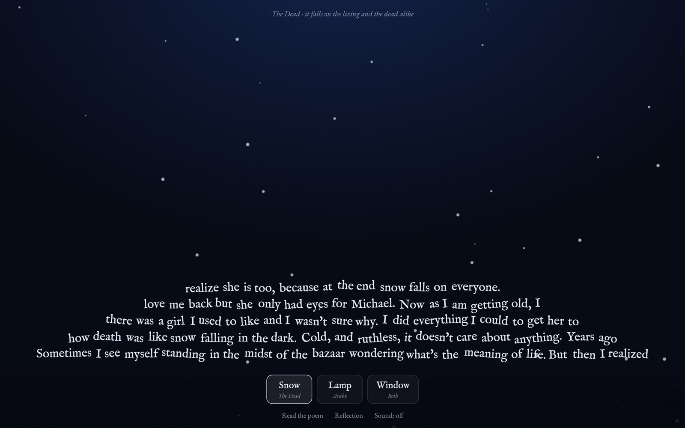
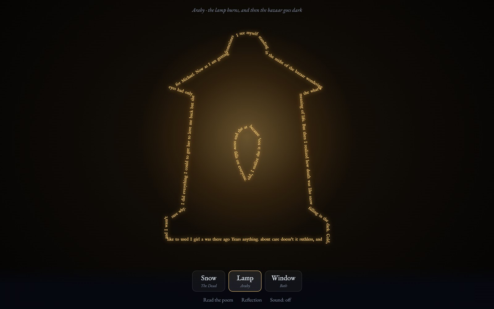
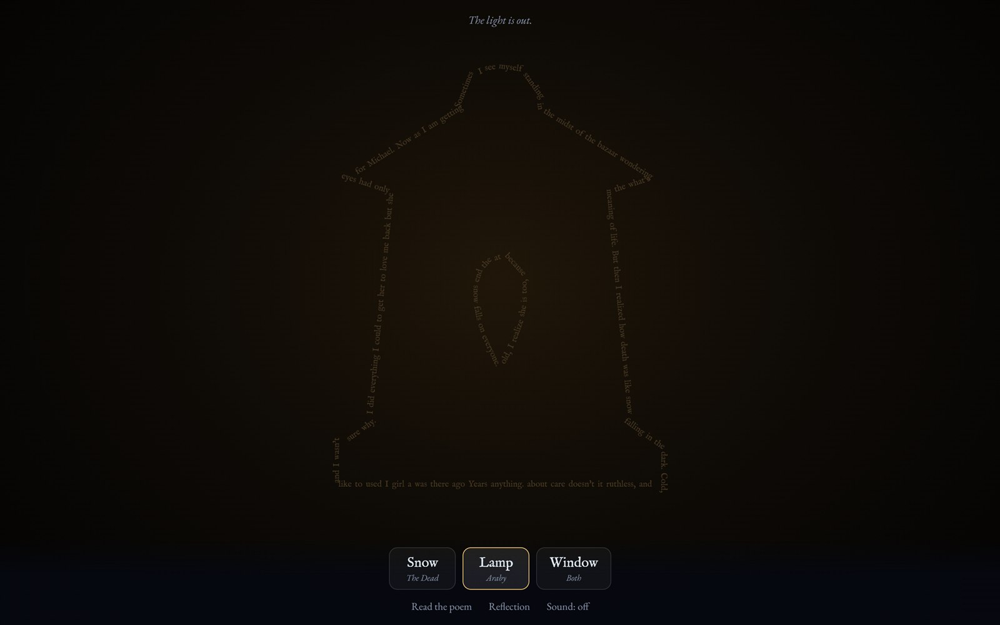
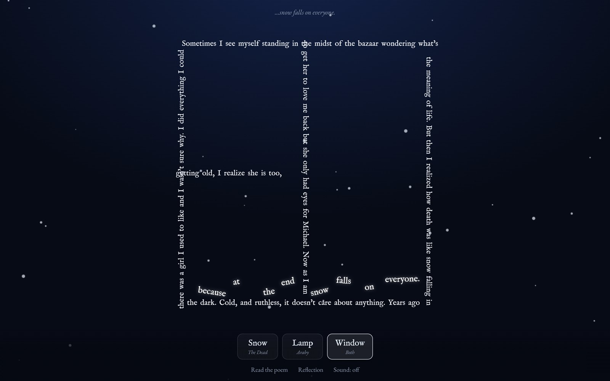

Open the link and choose a shape: Snow (The Dead), Lamp (Araby), or Window (Both).
The words never change. Only the shape changes. Different story, same ending. That is Joyce's paralysis: the characters have an epiphany, but nothing in their lives actually changes.
Stories used: "Araby" and "The Dead."
Love and Death
Sometimes I see myself standing in the midst of the bazaar wondering what's the meaning of life. But then I realized how death was like snow falling in the dark. Cold, and ruthless, it doesn't care about anything. Years ago there was a girl I used to like and I wasn't sure why. I did everything I could to get her to love me back but she only had eyes for Michael. Now as I am getting old, I realize she is too, because at the end snow falls on everyone.




I chose "Araby" and "The Dead" because they both talk about things that feel real to me: love and death. One thing that is constant in life is death. At the end of the day, we are all going to die. Love is there too, and I believe God made it. But sometimes we don't really deserve it.
In my poem, I mixed the boy from "Araby" and Gabriel into one person. They have something in common. Both of them want love, and both of them find out the truth about themselves. I see love and death as two sides of the same coin. When you really love someone, you're ready to die for them, like Michael Furey did for Gretta. Gabriel realizes he has never loved anyone like that.
The "Araby" epiphany hit me the most. The boy realizes his love was mostly about himself. I realized that, like him, my feelings for someone were sometimes more about me than about her. That was hard to admit.
I called the snow cold and ruthless. Joyce says it falls on all the living and the dead. It falls the same on everyone, but it doesn't hurt everyone the same. On a rich family's roof, it's just cold. On a homeless person with nothing to protect them, it can kill. Death is equal, but life isn't.
That's why my simulation keeps the words the same and only changes the shape. Life might look different for everyone, but the core story is the same. No matter how different your life looks, we are all going to die. Just like Joyce's characters, the shape changes, but the ending doesn't.